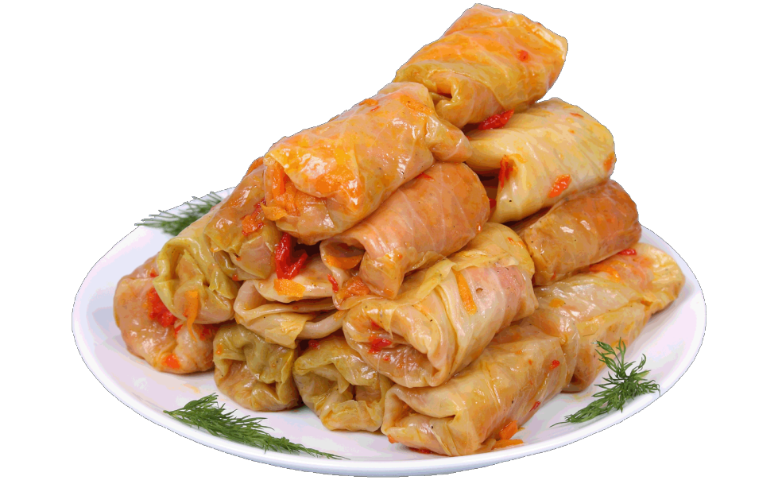

Klassikalised kapsarullid

Koostisosad
| Koostisosa |
Kogus |
| Suur kapsas |
1 tk |
| Keetmata riis |
75g |
| Hakitud sibul |
1-2 tk |
| Kodune hakkliha |
500g |
| Hakitud küüslauguküüs |
1-2 tk |
| Sool ja must pipar |
Maitse järgi! |
Hakitud till või maitseroheline |
2 sl - soovi korral! |
| Kuum vesi või puljong |
3-4 dl |
Valmistamine
- Uurista kapsajuurikas terava noaga ettevaatlikult välja. Pane kapsapea suurde potti soolasesse vette keema. Eralda pealmised lehed sedamööda, kuidas need pehmenema hakkavad - jahuta kiiresti külmas vees, et kapsalehed edasi ei pehmeneks.
- Kui lehtede rootsuosa on liiga paks, siis lõike see noaga veidi õhemaks.
- Keeda riis poolpehmeks. Prae hakitud sibul kergelt võis läbi.
- Sega suures kausis keedetud riis, hakkliha ja ülejäänud täidisekomponendid, maitsesta korralikult.
- Pane lusikatäis liha-riisisegu igale kapsalehele ja keera leht pakiks kokku.
- Aseta kapsarullid ahjuvormi, kalla vormi ka kuuma (kapsakeedu)vett või puljongit ning poeta peale mõni võitükike. Küpseta 200kraadises ahjus 50-60 minutit. Küpsetamise ajal võiksid 1-2 korda kapsarulle ringi pöörata, et nad ühtlaselt pruunistuksid.
- Küpsetamise lõpupoole võid potti lisada pisut puljongit või rõõska koort või katta vormi fooliumiga, et rullid pealt liialt ei pruunistuks.